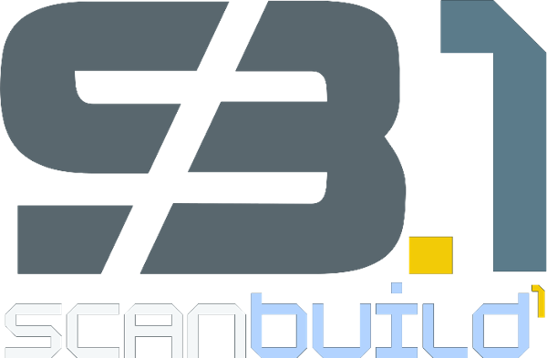

Towers Passport · Implementation sheet
Companion to Towers Passport Landing.html. Visual identity status: working draft, pending approval. Items that would become permanent brand rules are flagged in §5.
01 · Colour
Digitised geometry / data: Cobalt Surge → Sky Current → Ice Veil.
Point-cloud height ramp (base → crown): Deep Cobalt → Cobalt Blue → Cobalt Surge → Sky Current → Ice Veil → Signal Mist. FORM/BUILT stop at Ice Veil; only CAPTURED reaches Signal Mist.
Blue = technology and data. Yellow = commercial meaning (a CTA, a result, a flagged issue, the active step). Never swap.
02 · Typography
Chosen for its chamfered, squarish counters — the nearest open-licence relative of the wordmark's techno-geometric face. H1 40→92px fluid; H2 32→66px.
A photoreal, explorable 3D tower built from your architects' CAD and BIM — in any browser, tablet or display screen.
01 · The problem
Yellow italic (em.y) = commercial / emotional. Sky Current italic (em.b) = technology. Every H2 on the page uses one.
Outline = not yet built (FORM, "before it exists", "sold"). Half-filled from the base = rising (BUILT). Solid = as-built (CAPTURED).
03 · Hero interaction · two directions
Points within 150px (90px mobile) of the pointer push outward on a quadratic falloff (max 46px), brighten up to Ice Veil and grow slightly. The model "opens around the hand". Reads instantly under a thumb, costs nothing to understand, and works at 60fps on mid-range phones.
Outside the lens the cloud softens (larger, dimmer points — "unresolved"). Inside, points sharpen, CAD slab lines resolve, and a mono label reads LEVEL 18 · RESOLVED. Stronger conceptually — "bringing the model into focus" — and the better desktop moment; less legible on a small touch target. Toggle in Tweaks.
04 · Motion specification
| Element | Trigger | Behaviour | Timing / easing | Reduced motion / no JS |
|---|---|---|---|---|
| Hero cloud | Load; continuous while in view | 15k points desktop / 7k mobile (≈−50%). Y-rotation 0.12 rad/s; pointer adds ±0.35 rad yaw. DPR capped at 2. Paused off-screen via IntersectionObserver. | rotation linear · pointer lerp 0.14/frame · presence lerp 0.06 | Static key image (presentation p.1), labelled illustrative |
| Capture sweep | Loop | Horizontal scan plane rises base→crown, brightening points within ±0.03 height. Yellow issue markers appear only once swept. | period ≈ 7.8s · linear | — |
| Pointer aura | Pointer / touch | Radial glow Cobalt Surge 10→20% → Cobalt Blue 6% → transparent, follows pointer; returns to tower centre on leave. | lerp 0.14 · fade 0.06 | Static CSS radial glow |
| Spatial story | Scroll (420vh pinned track) | 0–0.34 FORM: CAD slabs draw up from the base, corner edges, mullions, dimension string L00–L30. 0.30–0.40 cross-fade to points. 0.36–0.64 BUILT: 50% point subset revealed by rising scan plane; design ghost lines persist at 22% for comparison; 5 yellow issues FLAGGED → CONFIRMED with leader-line labels. 0.68–0.86 CAPTURED: interior plates + services + full density; ramp extends to Signal Mist; issues RECORDED. Camera yaw −0.62→+0.38 rad across the whole scroll — one continuous arc, one asset. | progress lerp 0.12/frame · smoothstep per phase | Static three-stage image + all three stage descriptions visible |
| Stage tabs | Scroll; tap | Active stage label turns yellow, its 2px bar fills with local progress. Tap jumps scroll to stage midpoint. | smooth scroll · native | All three shown, no bars |
| Readouts | Live | Mono corner panels: mode, source, points, issues, model ID. | hero 2 Hz · story per frame | Hidden |
| Progress rail | Scroll | 2px top bar, Cobalt → Surge → Sky → Ice, scaleX = page progress. | direct | Present, static update |
| Nav | Scroll > 24px | Transparent → 78% ground + 14px blur + hairline. | 0.3s | Instant |
| Sticky CTA (mobile) | Hero bottom < 80px; hidden while form visible | Slides up from bottom; body gains 76px bottom padding so nothing is covered. | 0.4s cubic-bezier(.16,1,.3,1) | Instant |
| Payment layers | 35% in view, once | Underline bars draw left→right in sequence (Surge, Surge, Yellow). Content itself never hidden. | 1s ease-out · 0 / 250 / 500ms stagger | Bars drawn |
| Tower class | Tap Boutique / Mid / High | Selected column highlights; layer amounts, months and fee-mix bar update. | bar 0.7s ease-out | No JS: all three class cards shown stacked |
| Hover | Pointer | Primary CTA lifts 1px with yellow glow, arrow nudges 3px. Program card image scales 1.04 over 1.2s. | 0.25s / 1.2s ease-out | Colour change only |
Guard rails: html.motion is added only when JS runs, canvas is supported and prefers-reduced-motion is not set. Every motion style is scoped to it, so the default HTML — and any link preview or screenshot — is the complete page.
05 · Delivery notes · flagged for brand review
Derived page ground #011A40. Deep Cobalt (#003070) pulled ~45% toward black for the base canvas, so photography and glowing points have headroom. Deep Cobalt itself is kept for the footer and CTA. Not one of the nine swatches — needs approval or a 10th swatch.
Display face: Chakra Petch. Selected for its chamfered square geometry matching the wordmark. Body IBM Plex Sans, data IBM Plex Mono. The presentation's exact faces were not confirmable from the PDF; this pairing should be ratified or swapped.
Outline → half → solid type grammar. Introduced as meaning: unbuilt / rising / as-built. Proposed as a permanent device for FORM / BUILT / CAPTURED everywhere.
Italic colour rule. Yellow italic = commercial/emotional; Sky Current italic = technology. Formalised from the brief.
Point-cloud height ramp (Deep Cobalt → Signal Mist) and "only CAPTURED reaches Signal Mist" — proposed as the standard digitisation ramp.
Yellow issue marker: a 6px rotated square in a 14px frame with leader line and mono label FLAGGED / CONFIRMED / RECORDED.
Logo on dark. The SB.1 light-on-dark lockup was cut from its Azure Grey square to a transparent PNG (no recolour, no effects) so it sits on the cobalt ground. Final should come from vector masters.
Swatch 9 spelling. The design system names it "Acent Yellow" — typo for "Accent Yellow". This sheet uses the corrected spelling.
Copy / compliance. The presentation's "Exclusive ANZ partner" credential was retitled "Real Horizons partner" and all copy reads "delivered in partnership with Real Horizons spatial technology". The word "exclusive" does not appear. No forecast, valuation, ROI, use-of-funds or round terms appear.
FAQ content. The brief asks for six FAQs but no FAQ copy was supplied. The six answers are composed strictly from presentation facts (agents, surveyors, integration, data ownership, scan cadence, site team). Please confirm or supply final questions.
Problem section. The "$500k–$2m display suites" and "six separate systems" facts from the presentation's p.3 are folded into a single kicker line rather than a second card grid, keeping the hook shallow.
Imagery is taken from the presentation (AI-generated) and labelled "Illustrative" wherever it appears. The hero/story canvases are a procedural tower, not a real project; readouts say "TP-01 · ILLUSTRATIVE".